Snakes of Guatemala
144 snake species are recorded in Guatemala in SnakeList: 23 venomous and 121 non-venomous, from 7 families.
- 144species
- 23venomous
- 121non-venomous
- 7families
Species
Showing 144 species
 Adorned Graceful Brown SnakeRhadinaea decorata
Adorned Graceful Brown SnakeRhadinaea decorata Atlantic Central American MilksnakeLampropeltis polyzona
Atlantic Central American MilksnakeLampropeltis polyzona- No photo yetBaird's Black-headed SnakeTantilla bairdi
 Banded Cat-eyed Snake (annulata)Leptodeira annulata
Banded Cat-eyed Snake (annulata)Leptodeira annulata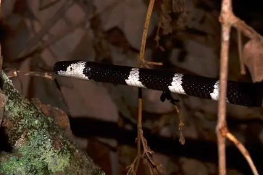
Banded Snail SuckerTropidodipsas fasciata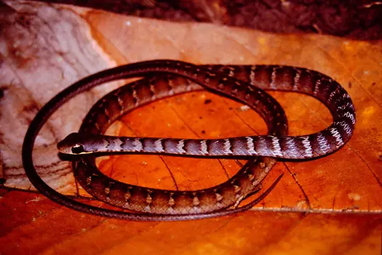
Barred Forest RacerDendrophidion vinitor Black Blind Snake (ater)Epictia ater
Black Blind Snake (ater)Epictia ater Black-banded Cat-eyed SnakeLeptodeira nigrofasciata
Black-banded Cat-eyed SnakeLeptodeira nigrofasciata Black-banded SnakeScolecophis atrocinctus
Black-banded SnakeScolecophis atrocinctus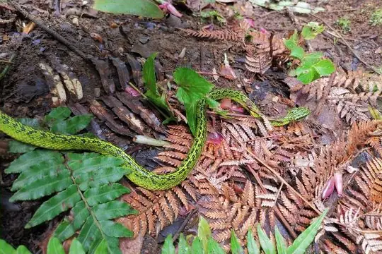
Black-speckled Palm Pit ViperBothriechis nigroviridis Black-striped Snake (imperialis)Coniophanes imperialis
Black-striped Snake (imperialis)Coniophanes imperialis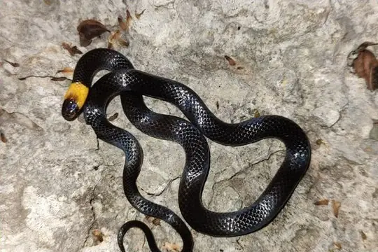
Blackbelly Centipede SnakeTantilla moesta Blackneck Garter SnakeThamnophis cyrtopsis
Blackneck Garter SnakeThamnophis cyrtopsis Blood SnakeStenorrhina freminvillei
Blood SnakeStenorrhina freminvillei Blotched Hooknose SnakeFicimia publia
Blotched Hooknose SnakeFicimia publia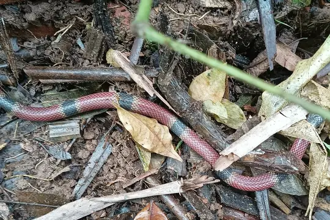
Broad-ringed Coral SnakeMicrurus latifasciatus Brown SnakeStoreria dekayi
Brown SnakeStoreria dekayi Brown VinesnakeOxybelis aeneus
Brown VinesnakeOxybelis aeneus Brown's Coral SnakeMicrurus browni
Brown's Coral SnakeMicrurus browni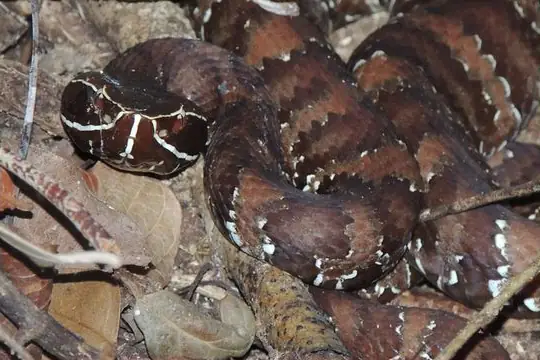
CantilAgkistrodon russeolus Carr's Snail SuckerSibon carri
Carr's Snail SuckerSibon carri Cat-eyed Snake (septentrionalis)Leptodeira septentrionalis
Cat-eyed Snake (septentrionalis)Leptodeira septentrionalis Central American Centipede SnakeTantilla taeniata
Central American Centipede SnakeTantilla taeniata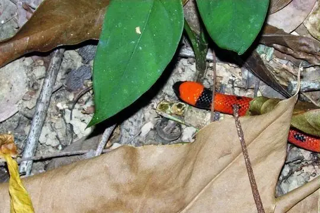
Central American Coral SnakeMicrurus nigrocinctus Central American Indigo SnakeDrymarchon melanurus
Central American Indigo SnakeDrymarchon melanurus Central American Jumping Pit ViperMetlapilcoatlus mexicanus
Central American Jumping Pit ViperMetlapilcoatlus mexicanus Central American Lyre SnakeTrimorphodon quadruplex
Central American Lyre SnakeTrimorphodon quadruplex Central American Tree SnakeImantodes gemmistratus
Central American Tree SnakeImantodes gemmistratus Checkered Garter SnakeThamnophis marcianus
Checkered Garter SnakeThamnophis marcianus- No photo yetChiapan BoaUngaliophis continentalis
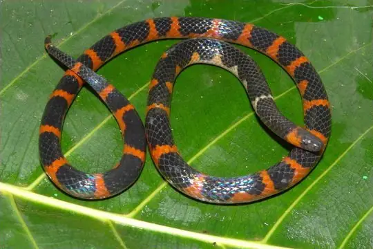
Chiapas Earth SnakeGeophis cancellatus Chicken SnakeSpilotes pullatus
Chicken SnakeSpilotes pullatus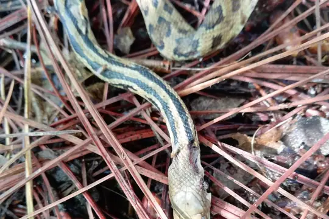
Cincuate Bull SnakePituophis lineaticollis Cloud Forest Parrot SnakeLeptophis modestus
Cloud Forest Parrot SnakeLeptophis modestus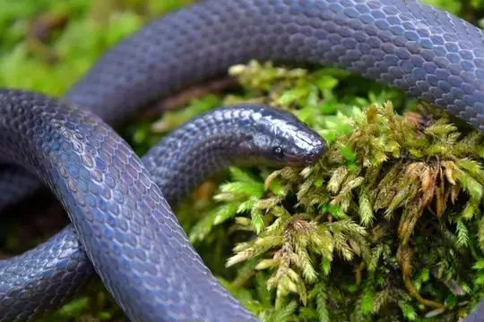
Coffee Earth SnakeGeophis nasalis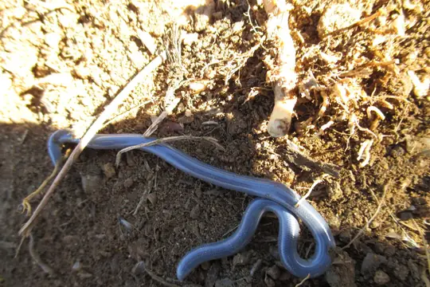
Coffee Worm SnakeAmerotyphlops tenuis Colombian BoaBoa imperator
Colombian BoaBoa imperator Cope's Black-striped SnakeConiophanes piceivittis
Cope's Black-striped SnakeConiophanes piceivittis Cope's False Coral SnakePliocercus euryzonus
Cope's False Coral SnakePliocercus euryzonus Cope's Snail SuckerSibon anthracops
Cope's Snail SuckerSibon anthracops Costa Rica Water SnakeHydromorphus concolor
Costa Rica Water SnakeHydromorphus concolor Costal Lyre SnakeTrimorphodon biscutatus
Costal Lyre SnakeTrimorphodon biscutatus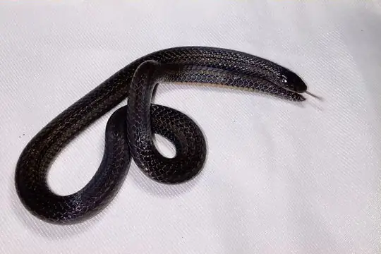
Dary's Burrowing SnakeAdelphicos daryi Degenhardt's Scorpion-eating SnakeStenorrhina degenhardtii
Degenhardt's Scorpion-eating SnakeStenorrhina degenhardtii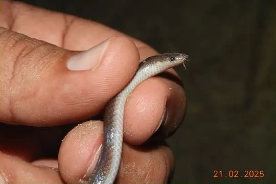
Downs' Earth SnakeGeophis immaculatus Dunn's Road GuarderCrisantophis nevermanni
Dunn's Road GuarderCrisantophis nevermanni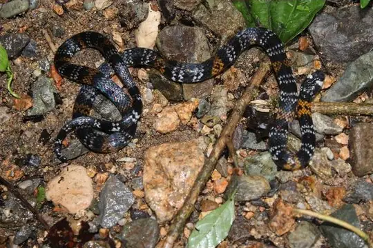
Elegant Coral SnakeMicrurus elegans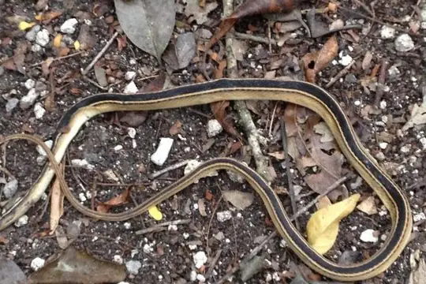
Faded Black-striped SnakeConiophanes schmidti False Fer-de-lanceXenodon rabdocephalus
False Fer-de-lanceXenodon rabdocephalus Fer-de-lanceBothrops asper
Fer-de-lanceBothrops asper Fiddle-string SnakeImantodes cenchoa
Fiddle-string SnakeImantodes cenchoa Fischer's Snail-eating SnakeTropidodipsas fischeri
Fischer's Snail-eating SnakeTropidodipsas fischeri Forest Flame SnakeOxyrhopus petolarius
Forest Flame SnakeOxyrhopus petolarius Godman's Graceful Brown SnakeRhadinella godmani
Godman's Graceful Brown SnakeRhadinella godmani Godman's Montane Pit ViperCerrophidion godmani
Godman's Montane Pit ViperCerrophidion godmani Greater Centipede SnakeTantilla impensa
Greater Centipede SnakeTantilla impensa Green Highland RacerDrymobius chloroticus
Green Highland RacerDrymobius chloroticus Green Rat Snake (triaspis)Senticolis triaspis
Green Rat Snake (triaspis)Senticolis triaspis Green Vine Snake (fulgidus)Oxybelis fulgidus
Green Vine Snake (fulgidus)Oxybelis fulgidus Guatemala Neckband SnakeScaphiodontophis annulatus
Guatemala Neckband SnakeScaphiodontophis annulatus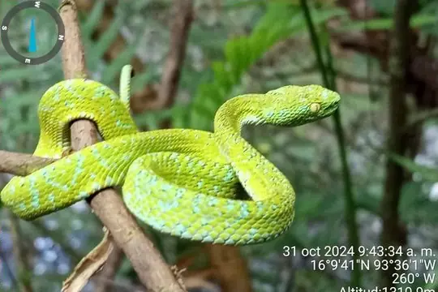
Guatemala Palm Pit ViperBothriechis bicolor- No photo yetGuatemalan Earth SnakeChapinophis xanthocheilus
 Guatemalan Vine SnakeOxybelis koehleri
Guatemalan Vine SnakeOxybelis koehleri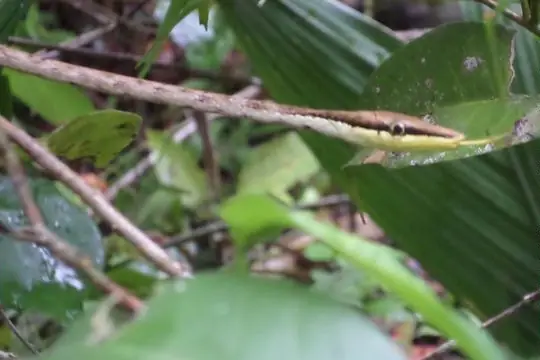
Gulf Coast Vine SnakeOxybelis potosiensis Hallowell's Centipede SnakeTantilla vermiformis
Hallowell's Centipede SnakeTantilla vermiformis- No photo yetHannstein's Spot-lipped SnakeRhadinella hannsteini
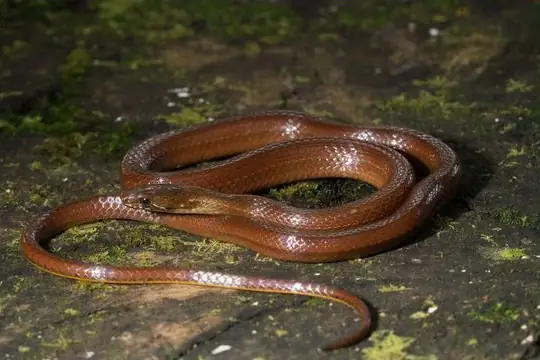
Hempstead's Pine Woods SnakeRhadinella hempsteadae Highland Garter SnakeThamnophis fulvus
Highland Garter SnakeThamnophis fulvus Hognosed Pit ViperPorthidium nasutum
Hognosed Pit ViperPorthidium nasutum Honduran milk snakeLampropeltis abnorma
Honduran milk snakeLampropeltis abnorma- No photo yetIbarra's Burrowing SnakeAdelphicos ibarrorum
- No photo yetJan's Centipede SnakeTantilla jani
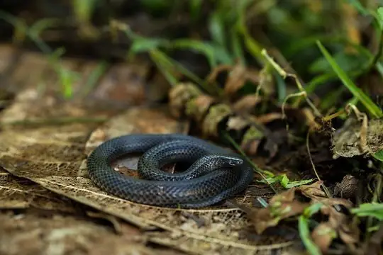
Keeled Earth SnakeGeophis carinosus Kinkelin Graceful Brown SnakeRhadinella kinkelini
Kinkelin Graceful Brown SnakeRhadinella kinkelini Linton's Dwarf Short-tail SnakeTantillita lintoni
Linton's Dwarf Short-tail SnakeTantillita lintoni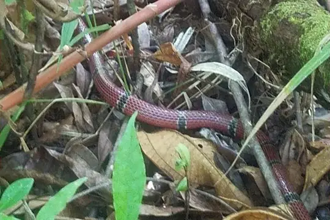
Mayan Coral SnakeMicrurus hippocrepis Merendon Palm Pit ViperBothriechis thalassinus
Merendon Palm Pit ViperBothriechis thalassinus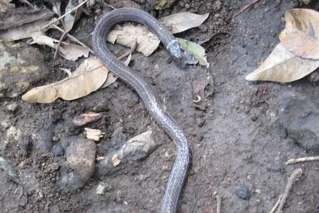
Mertens' Centipede SnakeTantilla brevicauda Mexican burrowing pythonLoxocemus bicolor
Mexican burrowing pythonLoxocemus bicolor Mexican MoccasinAgkistrodon bilineatus
Mexican MoccasinAgkistrodon bilineatus Mexican Parrot SnakeLeptophis mexicanus
Mexican Parrot SnakeLeptophis mexicanus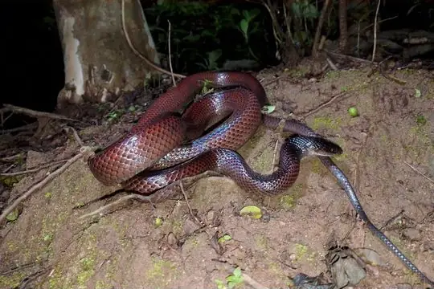
Mexican Snake EaterClelia scytalina Middle American Burrowing Snake (quadrivirgatum)Adelphicos quadrivirgatum
Middle American Burrowing Snake (quadrivirgatum)Adelphicos quadrivirgatum Middle American Burrowing Snake (visoninum)Adelphicos visoninum
Middle American Burrowing Snake (visoninum)Adelphicos visoninum Middle American RattlesnakeCrotalus simus
Middle American RattlesnakeCrotalus simus Monte Cristi Graceful Brown SnakeRhadinella montecristi
Monte Cristi Graceful Brown SnakeRhadinella montecristi Mussurana (clelia)Clelia clelia
Mussurana (clelia)Clelia clelia Neotropical Whip SnakeMasticophis mentovarius
Neotropical Whip SnakeMasticophis mentovarius Northern Banded Coffee SnakeNinia pavimentata
Northern Banded Coffee SnakeNinia pavimentata Olmecan Pit ViperMetlapilcoatlus olmec
Olmecan Pit ViperMetlapilcoatlus olmec Orangebelly Swamp SnakeTretanorhinus nigroluteus
Orangebelly Swamp SnakeTretanorhinus nigroluteus Pacific Longtail SnakeEnulius flavitorques
Pacific Longtail SnakeEnulius flavitorques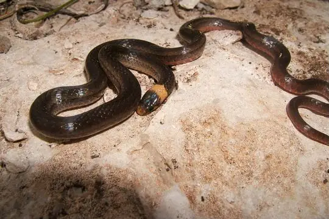
Peten Centipede Snake (cuniculator)Tantilla cuniculator- No photo yetPosada's Graceful Brown SnakeRhadinella posadasi
 Puffing SnakePhrynonax poecilonotus
Puffing SnakePhrynonax poecilonotus RacerColuber constrictor
RacerColuber constrictor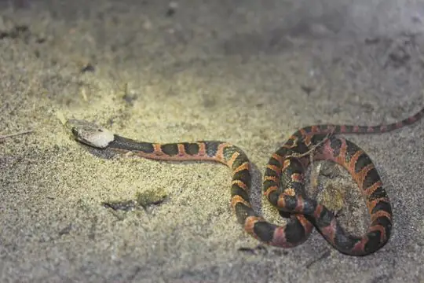
Rainforest Cat-eyed SnakeLeptodeira frenata Red-headed Forest RacerDendrophidion rufiterminorum
Red-headed Forest RacerDendrophidion rufiterminorum Redback Coffee SnakeNinia sebae
Redback Coffee SnakeNinia sebae Ringed Tree BoaCorallus annulatus
Ringed Tree BoaCorallus annulatus Ringneck Coffee SnakeNinia diademata
Ringneck Coffee SnakeNinia diademata Road GuarderConophis lineatus
Road GuarderConophis lineatus Rosebelly Earth SnakeGeophis rhodogaster
Rosebelly Earth SnakeGeophis rhodogaster Rusty-headed SnakeAmastridium sapperi
Rusty-headed SnakeAmastridium sapperi Rustyhead SnakeAmastridium veliferum
Rustyhead SnakeAmastridium veliferum Salmon-bellied racerMastigodryas melanolomus
Salmon-bellied racerMastigodryas melanolomus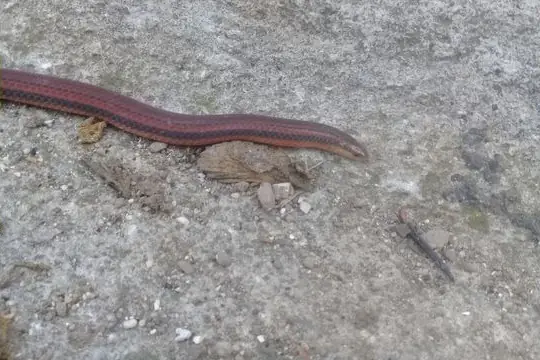
Sargi's Earth SnakeAdelphicos sargii Slender Hognose ViperPorthidium ophryomegas
Slender Hognose ViperPorthidium ophryomegas Slender Snail SuckerSibon dimidiatus
Slender Snail SuckerSibon dimidiatus Slinder ThreadsnakeEpictia phenops
Slinder ThreadsnakeEpictia phenops Snail-eating Thirst SnakeDipsas brevifacies
Snail-eating Thirst SnakeDipsas brevifacies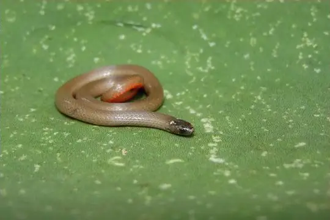
Speckled Dwarf Short-tail SnakeTantillita brevissima Speckled RacerDrymobius margaritiferus
Speckled RacerDrymobius margaritiferus Spotted Coffee SnakeNinia maculata
Spotted Coffee SnakeNinia maculata- No photo yetStadelman's Pine Woods SnakeRhadinella stadelmani
 Striped Lizard EaterMastigodryas dorsalis
Striped Lizard EaterMastigodryas dorsalis Striped Lowland SnakeLeptodrymus pulcherrimus
Striped Lowland SnakeLeptodrymus pulcherrimus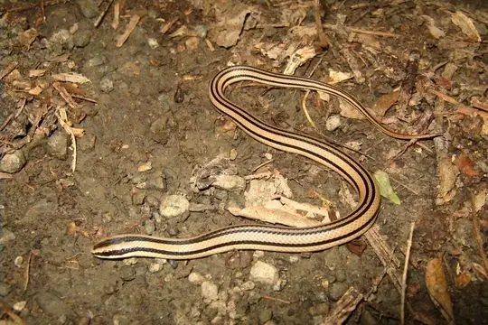
Striped Road GuarderConophis vittatus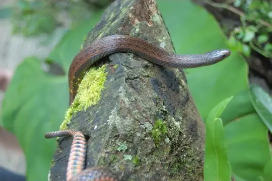
Stuart's Burrowing SnakeAdelphicos veraepacis- No photo yetStuart's Coral SnakeMicrurus stuarti
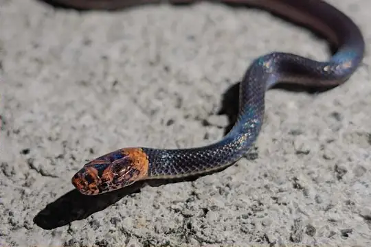
Stuart's Graceful Brown SnakeRhadinella pilonaorum Tearful Pine-Oak SnakeRhadinella lachrymans
Tearful Pine-Oak SnakeRhadinella lachrymans- No photo yetTerrestrial Snail SuckerTropidodipsas sartorii
 Two-spotted SnakeConiophanes bipunctatus
Two-spotted SnakeConiophanes bipunctatus Variable Coral SnakeMicrurus diastema
Variable Coral SnakeMicrurus diastema Variegated False Coral SnakePliocercus elapoides
Variegated False Coral SnakePliocercus elapoides- No photo yetVeracruz Earth SnakeGeophis chalybeus
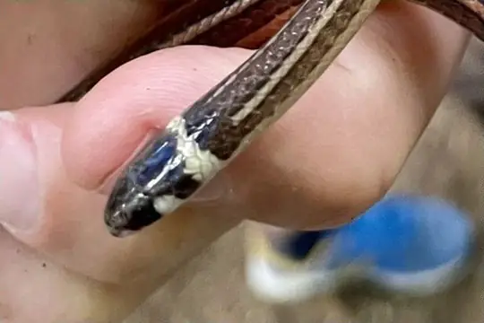
Vulcan Centipede SnakeTantilla vulcani Western Jumping PitviperMetlapilcoatlus occiduus
Western Jumping PitviperMetlapilcoatlus occiduus- No photo yetWhite-striped Centipede SnakeTantilla tecta
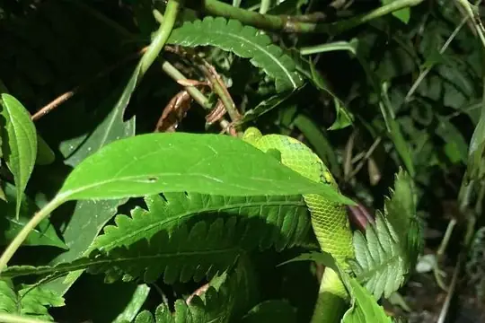
Yellow-blotched Palm Pit ViperBothriechis aurifer Yellow-red Rat SnakePseudelaphe flavirufa
Yellow-red Rat SnakePseudelaphe flavirufa Yellowbelly SnakeConiophanes fissidens
Yellowbelly SnakeConiophanes fissidens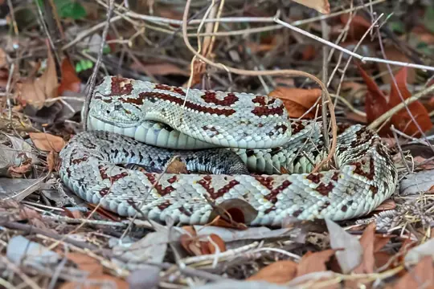
Yucatan Neotropical RattlesnakeCrotalus tzabcan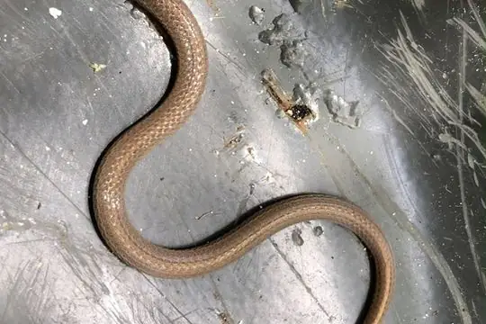
Yucatecan Dwarf Short-tail SnakeTantillita canula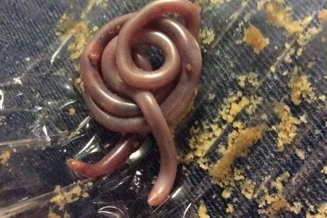
Yucatecan Worm SnakeAmerotyphlops microstomus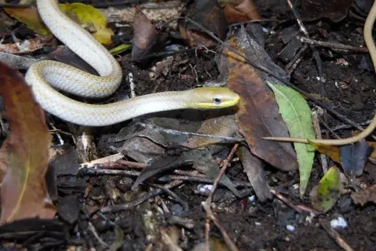
Yucatán White-lipped SnakeSymphimus mayae- No photo yetLeptodeira polysticta
 Leptodeira rhombifera
Leptodeira rhombifera Metlapilcoatlus borealis
Metlapilcoatlus borealis Rhadinella anachoreta
Rhadinella anachoreta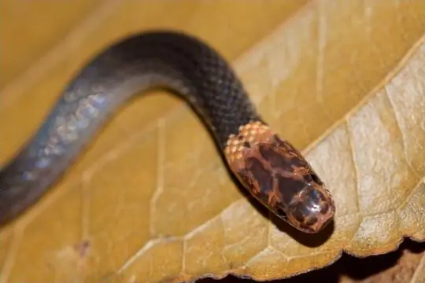
Rhadinella xerophila- No photo yetSibon merendonensis
 Tantilla armillata
Tantilla armillata
No snakes in Guatemala match.
Guatemala’s snakes in numbers
- Families: Colubridae 113, Viperidae 16, Elapidae 7, Boidae 3, Leptotyphlopidae 2, Typhlopidae 2, Loxocemidae 1.
- 12 are recorded in no other country in SnakeList: Baird's Black-headed Snake, Dary's Burrowing Snake, Guatemalan Earth Snake, Ibarra's Burrowing Snake, Jan's Centipede Snake, Stadelman's Pine Woods Snake, Stuart's Burrowing Snake, Stuart's Coral Snake, Vulcan Centipede Snake, White-striped Centipede Snake, Rhadinella xerophila, Sibon merendonensis.